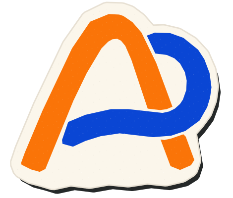
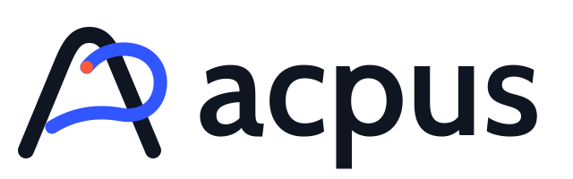

Do
Use open paths, decisive diagonals, state changes, and a single moving handoff node.
Every run is an opus.
A cultured workflow brand with the brakes off.
01 / IDEA
A Roman-proportioned A holds the history. An open loop borrows the motion of a lowercase p, a workflow edge, and a conductor's gesture. The vermilion node marks the handoff between agents.
Classical, not antique. Proportion and language stay; frontispiece borders and ornament leave.
Technical, not sterile. A durable system can still move, surprise, and have pulse.
Expressive, not noisy. One loop, one node, one decisive pigment palette.
02 / MARKS
The release label is detachable. The core mark remains useful after “Next” graduates.



03 / PIGMENTS
Parchment becomes a quiet base, not the whole personality. Ultramarine carries motion; vermilion marks action; brass is a rare heritage note.
#101522#F4F0E4#3155FF#FF5A36#C89A3D04 / TYPE
Cabin carries the brand and product surfaces. Recursive handles code and operational labels. Gentium Book Plus appears only where the “opus” idea needs a human voice.
Agents orchestrate agents.
workflow.ts → durable run
Every run is an opus.
05 / BEHAVIOR
Movement should feel like work passing cleanly between capable hands—not particles floating for decoration.
Use open paths, decisive diagonals, state changes, and a single moving handoff node.
Ornamental frames, faux engraving, gold everywhere, generic gradients, and decorative constellations.
06 / KIT
Marks, lockups, favicon, app icon, social card, pattern, and CSS tokens live in page/logo/ and page/brand-tokens.css.